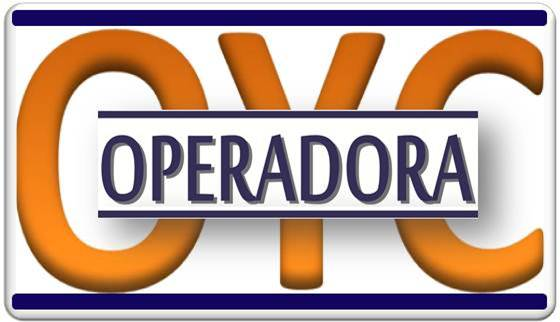
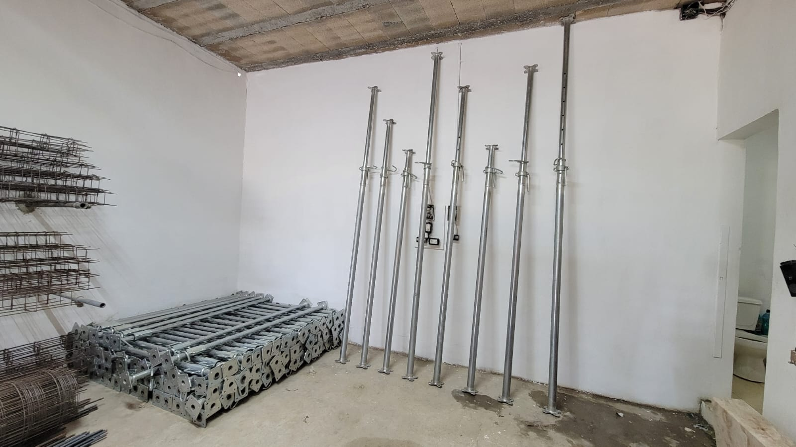
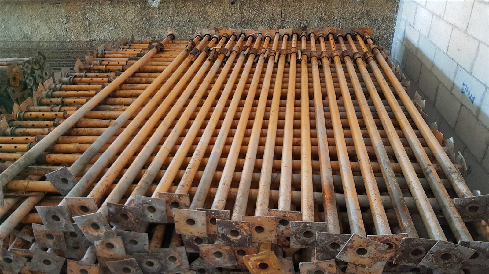
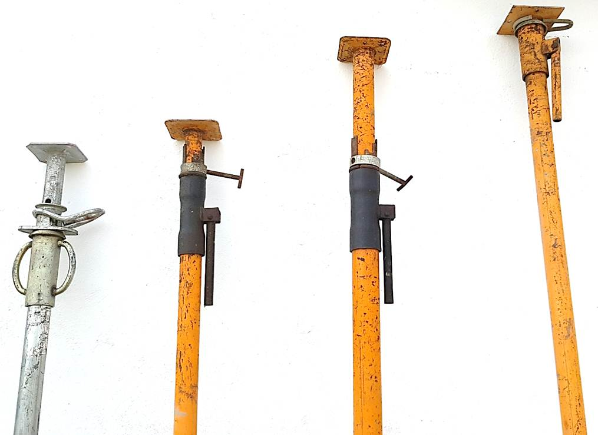
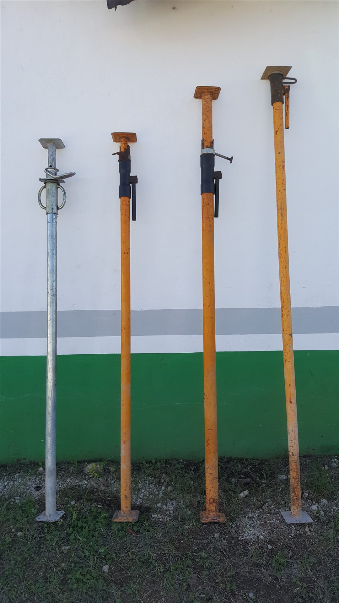

Equipo telescópico
Consulta modelos para las necesidades específicas de tu obra.

LlamarPUNTALES PARA CONSTRUCCIÓN EN MÉXICO
Cuéntanos la medida y el tipo de trabajo que necesitas para recibir atención directa sobre el equipo para tu proyecto.
WhatsApp disponible. Número para llamadas pendiente de configurar.

PUNTALES TELESCÓPICOS
PUNTALES NUEVOS
Consulta modelos para las necesidades específicas de tu obra.
Indica la altura requerida para orientarte sobre el modelo adecuado.
Solicita disponibilidad y detalles de los modelos nuevos por WhatsApp.
PUNTALES NUEVOS
Consulta los modelos nuevos de 3 m y 4 m para tu proyecto. Te confirmamos los detalles disponibles directamente por WhatsApp.



PUNTALES USADOS
Consulta por separado los lotes de puntales usados. Te compartimos modelos, medidas, condición y disponibilidad antes de tu decisión.



POR QUÉ CONTACTARNOS
Resuelve dudas de producto y disponibilidad por el canal que prefieras.
Solicita los datos que necesitas para decidir sobre el equipo que buscas.
Sin formularios: inicia la conversación con WhatsApp o una llamada.
APLICACIONES
ATENCIÓN EN MÉXICO
La cobertura, logística y condiciones aplicables se confirmarán al contactarnos.
VISÍTANOS EN MÉRIDA
PREGUNTAS FRECUENTES
Sí. Usa cualquiera de los botones de WhatsApp para iniciar una conversación directa.
Sí. Consulta por WhatsApp las opciones, medidas, condición y disponibilidad vigentes.
Consulta por modelos telescópicos de 3 metros y 4 metros. La disponibilidad se confirma al contactarnos.
Describe tu aplicación, las medidas y la etapa de obra al contactar al equipo para recibir orientación.
EMPIEZA HOY